Once, on your iPhone, in the Shortcuts app. Pictures from iOS 27. Orange outlines show where to tap.
Open Shortcuts and tap +. A "Describe a Shortcut" screen opens. Tap Edit (top right) to add actions yourself.
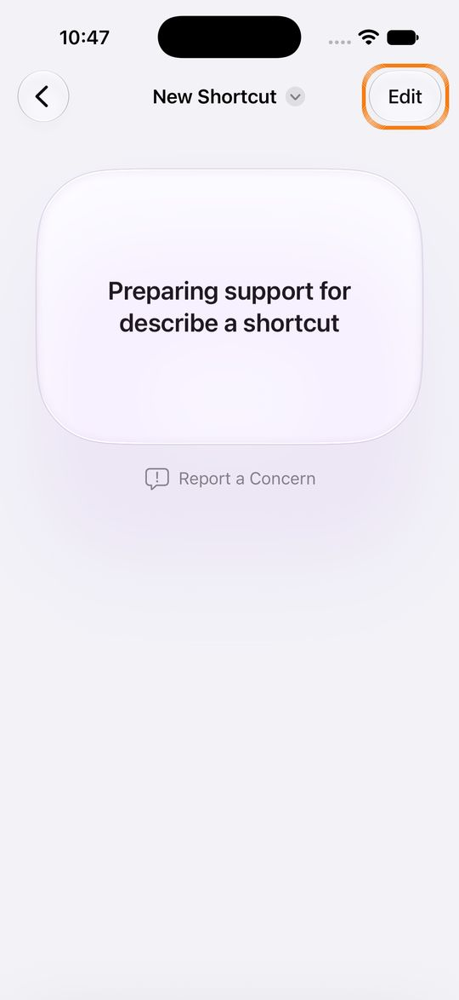
In the search box at the bottom, type split and tap Split Text.
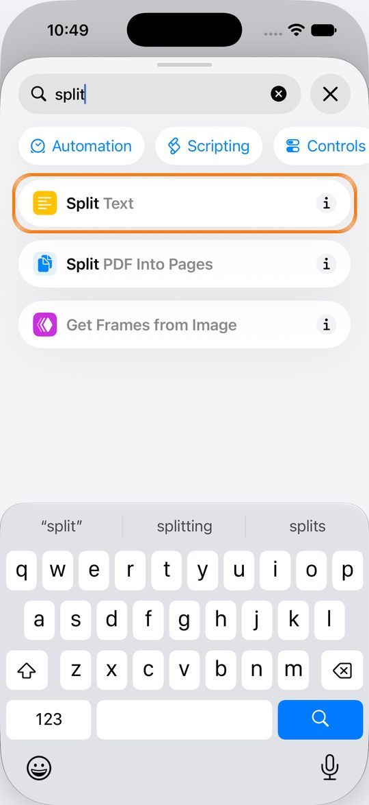
Tap the pale Text in the new action, then tap Select Variable.
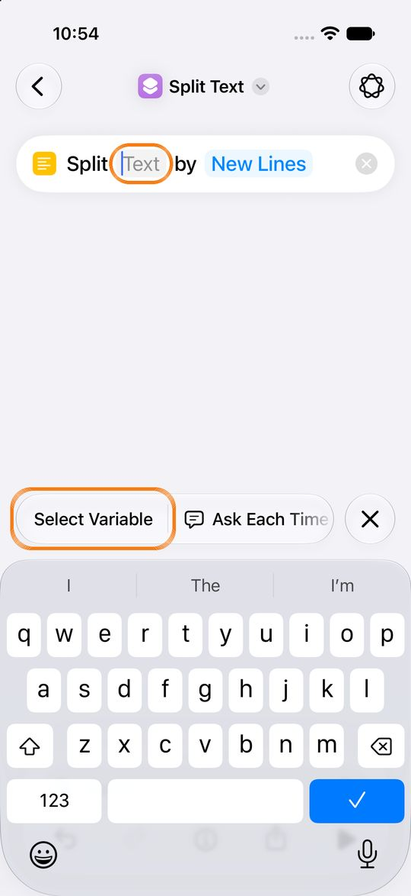
Tap Shortcut Input. A "Receive … from Nowhere" block appears at the top by itself. Leave it as it is.
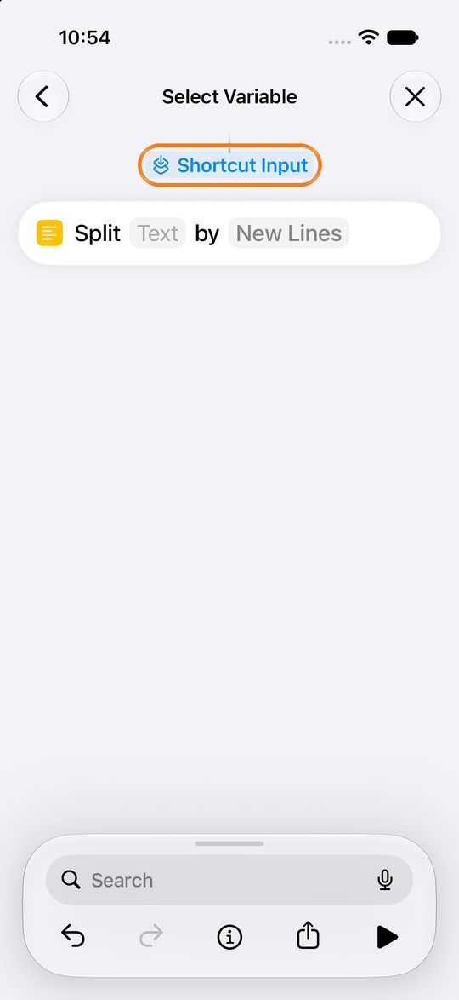
Search repeat and tap Repeat with Each.
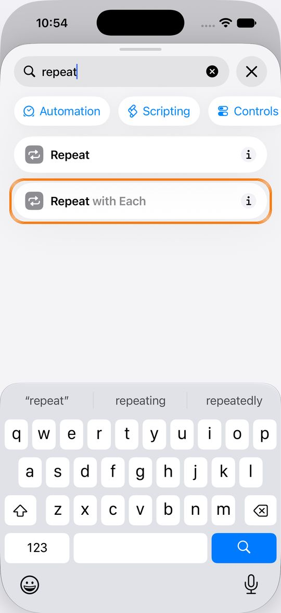
Tap the pale Items in the repeat, then tap Split Text.
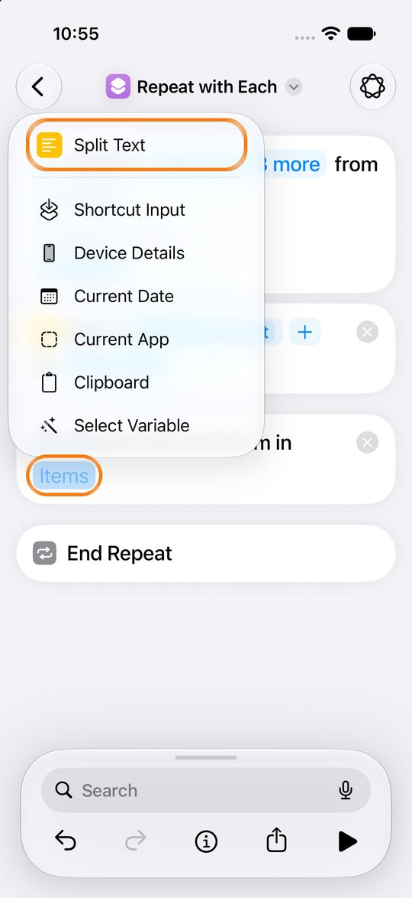
Search get dates and tap Get Dates from Input.
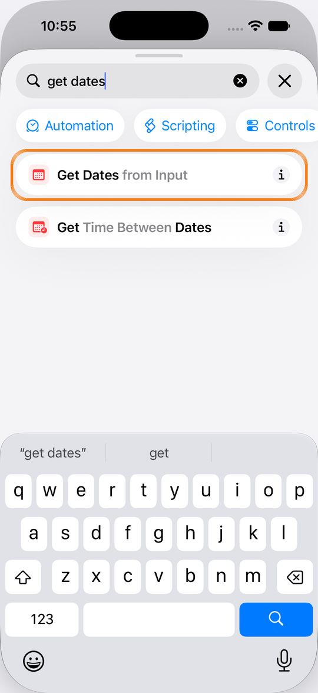
It lands below End Repeat, outside the loop. Press and hold it, then drag it up above End Repeat.
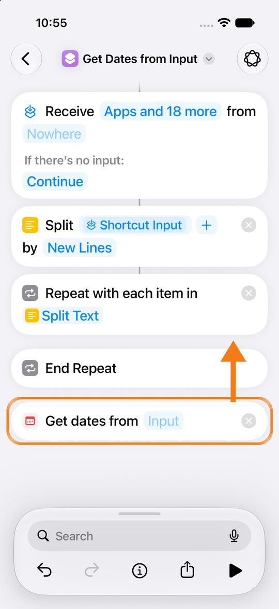
Inside the loop it changes to Get dates from Repeat Item by itself.
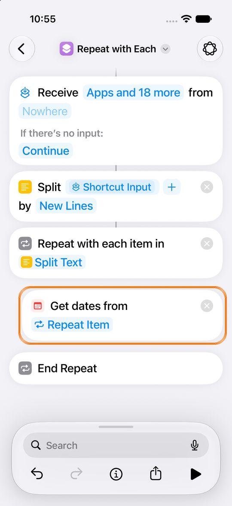
Search add alarm and tap Add Alarm (Clock, listed under "Alarms"). Drag it inside the loop under Get dates if it lands below End Repeat. It reads "Create an Alarm for Time called Name":
Tap Time → Select Variable → Dates.
Tap Name → Select Variable → Repeat Item.
This card is drawn: the iPhone Simulator has no Clock app, so I couldn't screenshot the real one. The wording comes from iOS 27's own files.
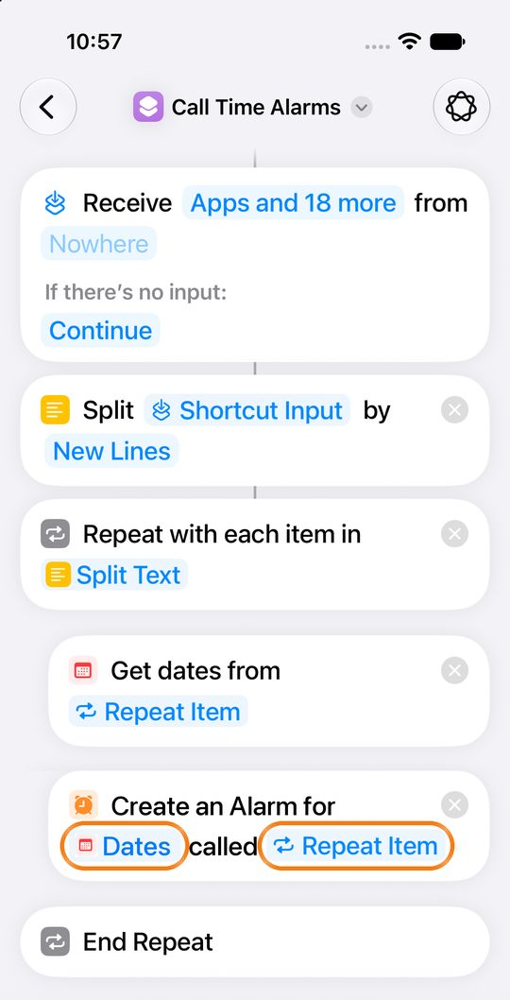
Tap the name at the top, choose Rename and type exactly Call Time Alarms. Then tap the back arrow to save.
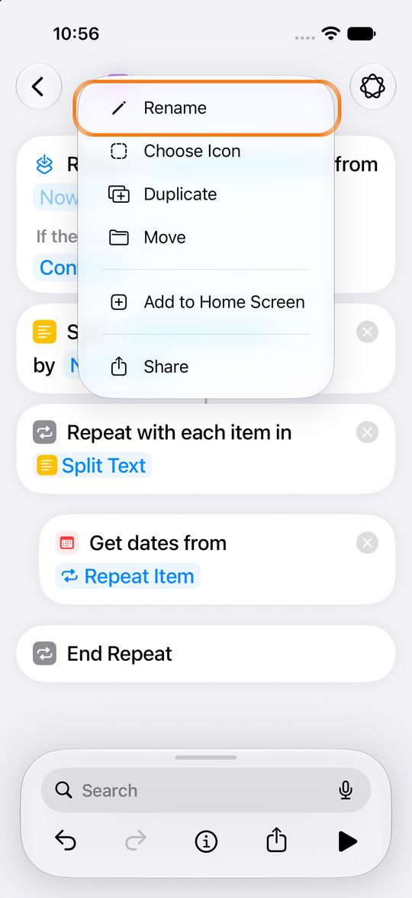
Then go back to Call Time, open Settings and tap Send a test alarm. The first time, allow the shortcut to use Clock. A "Call Time test" alarm should appear in Clock for 2 minutes from now.
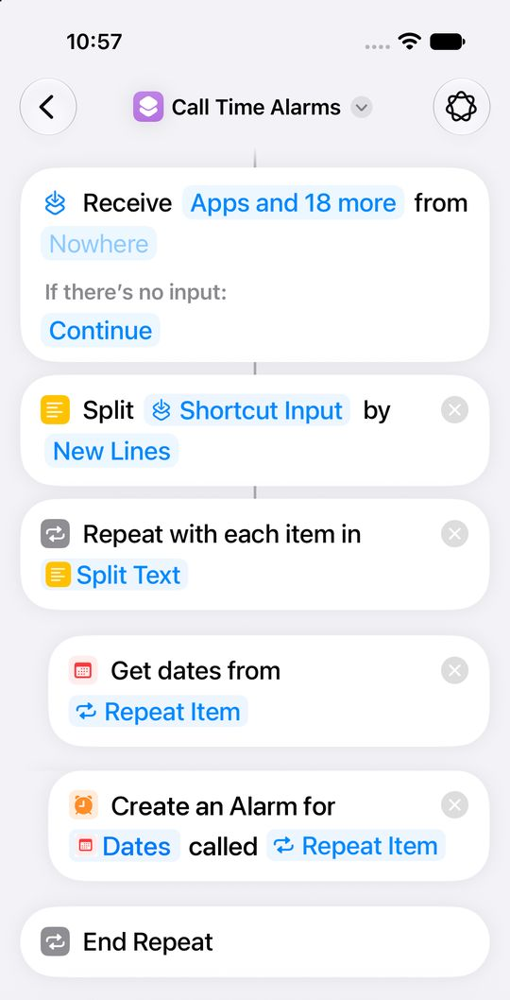